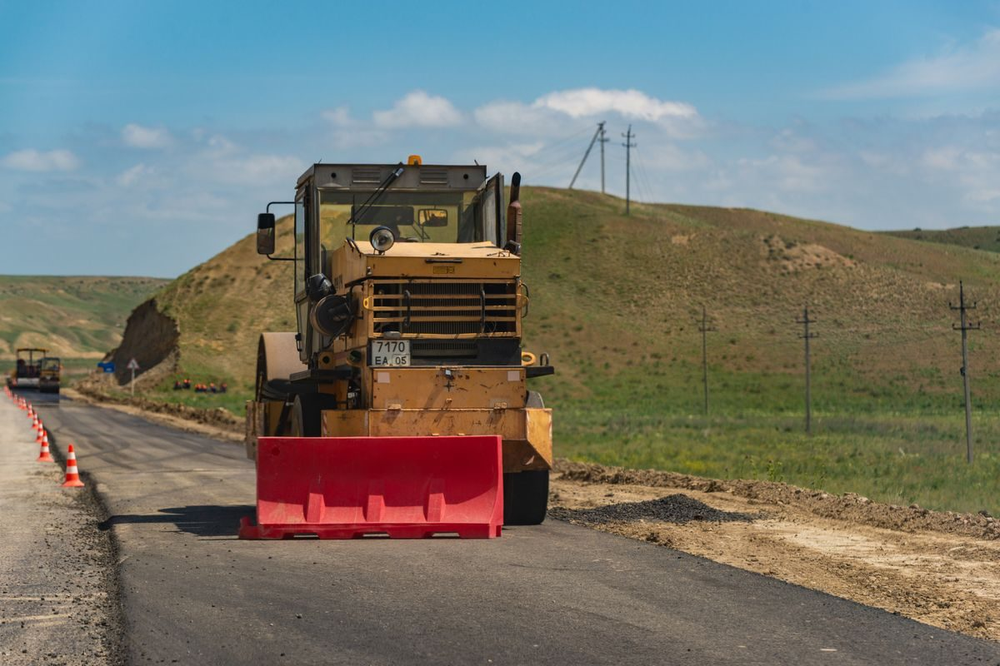
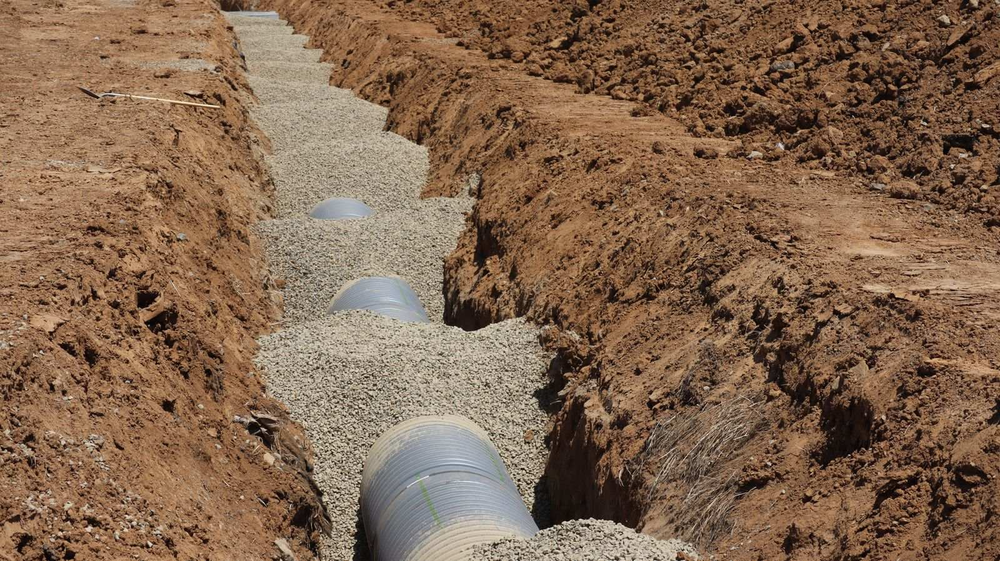
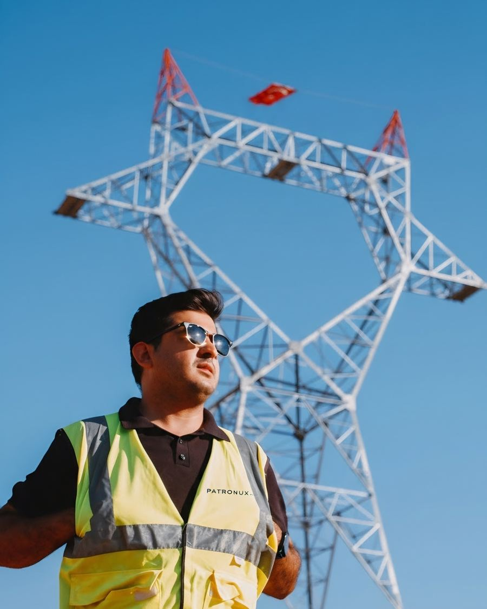
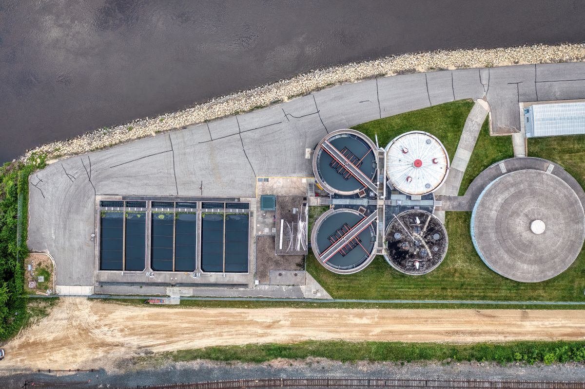
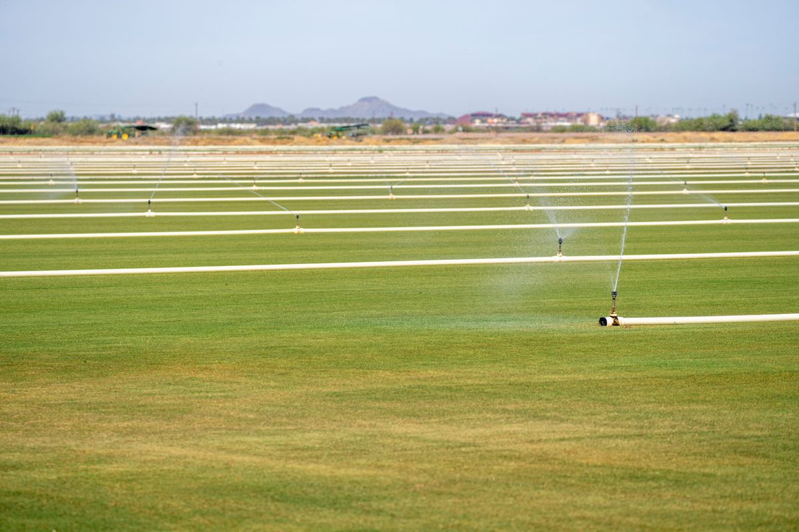

Patronux S.A. — Obras de agua y saneamiento en Montevideo
Redes de agua potable, saneamiento y riego para la industria, la vivienda y el campo.
+40 años de experiencia
Patronux S.A. — Uruguay
Bajá
Redes enterradas · Montevideo
01 — Quiénes somos
Oficio, no improvisación
Patronux S.A. es una empresa constructora uruguaya especializada en instalaciones de agua, saneamiento y riego.
Trabajamos con ingenieros y personal de obra cualificado, con más de 40 años acumulados de experiencia en el ramo.
+40
Años de experiencia acumulada
4
Áreas de especialidad

03 — Proyectos
Algunas obras
Obras de muestra. Las fotos y los títulos son ilustrativos: se reemplazan por obras reales de Patronux.


04 — Contacto
Hablemos de tu obra
Teléfono
2409 0752Celular
098 994 123Correo
patronuxsa@gmail.comDirección
Joaquín Requena 1497 Apto 3
Montevideo, CP 11200